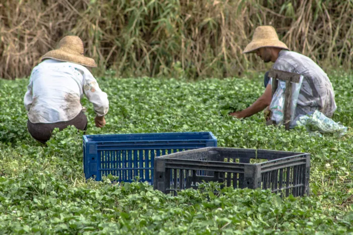
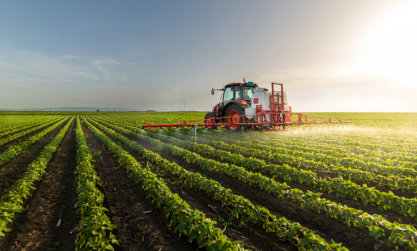

Quem Somos
giovana dias
estudante do curso de tecnologia
atualmente estou vinculada ao curso tecinico no seugundo nado do curso
Agricultura
Agricultura é a prática econômica que envolve a cultivação de alimentos, como o plantio de grãos e a produção de frutas. Essa é uma das principais áreas econômicas do Brasil.
A agricultura é uma atividade econômica caracterizada pelo plantio e cultivo de alimentos. A fixação da população nômade contribuiu para a produção alimentar em nível mundial. Atualmente, a atividade agrícola é umas das principais da economia mundial. Os sistemas agrícolas estão divididos em extensivo e intensivo. Esses modelos são subdivididos em diferentes tipos de agricultura, como a permacultura e o agronegócio. O Brasil é um dos principais produtores de alimentos de todo o mundo.
Resumo sobre agricultura
- A agricultura é uma prática econômica que se iniciou especialmente em razão da fixação da população humana devido à necessidade de produção de alimentos. O termo agricultura remete ao conjunto de atividades da parte primária da economia que se baseia na cultivação de plantas. Os diferentes tipos de agricultura estão associados aos modelos extensivo e intensivo de produção agrícola. São A agricultura é uma atividade de grande importância econômica e estratégica, especialmente no fornecimento de alimentos. O Brasil é um grande produtor mundial de bens primários, como soja, café, laranja, milho, algodão e cana-de-açúcar. O termo agropecuária designa o conjunto de atividades primárias que reúnem o cultivo de alimentos e a criação de animais.
O que é agricultura?
A agricultura é uma prática econômica que envolve o cultivo de espécies vegetais para a obtenção de alimentos e matérias-primas. Essa atividade econômica faz parte do setor primário da economia, que compreende as atividades pecuárias e extrativistas, além da própria agricultura. Essa prática tem grande importância em termos econômicos e estratégicos em nível mundial.
História da agricultura
A agricultura é, atualmente, um importante componente das atividades primárias da economia, com destaque para países subdesenvolvidos e emergentes. O crescimento da mecanização do solo, da biotecnologia e do investimento de capitais aumentou progressivamente a capacidade de plantio e colheita de alimentos, mas resultou em impactos ambientais significativos
Sistemas agrícolas
Agricultura extensiva

A agricultura extensiva é caracterizada pela adoção de técnicas tradicionais de cultivo.Esse modelo está fortemente vinculado à agricultura familiar, de baixa escala, baseada na policultura e praticada em médias e pequenas propriedades. A agricultura extensiva utiliza menos ferramentas tecnológicas, emprega menos mão de obra e consome menores investimentos em capital. Por sua vez, os impactos ambientais gerados por esse modelo agrícola são diminutos.
Agricultura intensiva


A agricultura intensiva é caracterizada pelo uso de modernas práticas agrícolas, com emprego de tecnologia de ponta, insumos e agroquímicos diversos, máquinas e equipamentos, e elevado investimento de capitais. Esse modelo gera maior produtividade das lavouras, emprega mão de obra muito qualificada e resulta na intensa mecanização do campo. Porém, causa inúmeros impactos ambientais resultantes da alteração da paisagem natural e do uso intensivo da terra.
Quais são os tipos de agricultura?
Os tipos de agricultura estão comumente associados aos dois grandes sistemas agrícolas: o modelo extensivo e o modelo intensivo.
Agricultura familiar
A agricultura familiar é caracterizada pelo emprego de mão de obra familiar, em pequenas propriedades, com baixo investimento de capital e foco na policultura de alimentos. Esse é um dos tipos de agricultura vinculada ao sistema extensivo de produção.